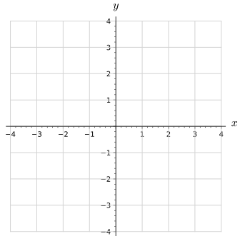
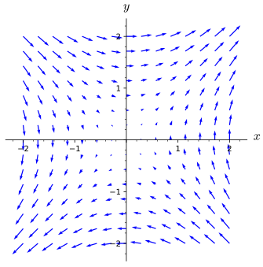

Vectors have played a central role in our study of multivariable calculus. We know how to do operations on vectors (addition, scalar multiplication, dot product, etc.), and we have seen how vectors can be used to describe curves in \(\R^2\) and \(\R^3\text{.}\) The examples of using vectors to describe curves was our first example of a vector-valued function. In Definition 10.1.4 a curve is traced by the terminal point of \(\vr(t)\text{,}\) a function that has a real number as an input and produces a vector in \(\R^2\) or \(\R^3\text{.}\) In this section, we will expand our understanding of vector-valued functions to take a point \((x,y)\) in \(\R^2\) (or a point \((x,y,z)\) in \(\R^3\)) as an input and produce a vector (typically in \(\R^2\) or \(\R^3\text{,}\) respectively) as output.
It’s common when discussing weather to talk about the wind speed, but as any student who has gotten this far in the text will know, this nomenclature is imprecise. It’s not terribly helpful to tell someone the wind is blowing at 10 km⁄h without telling them the direction in which the wind is blowing. If you’re trying to make a decision based on what the wind is doing, you need to know about the direction as well. For instance, if you are taking off in a hot air balloon, the wind direction will determine which direction the chase team should start going to keep track of you. Because of the swirling nature of wind, it makes sense to give the wind velocity at each point in a region (two-dimensional or three-dimensional).
Suppose that given a point \((x,y)\) in the plane, you know that the wind velocity at that point is given by the vector \(\langle y,x\rangle\text{.}\) For example, we’d then know that at the point \((1,-1)\text{,}\) the wind velocity is \(\langle -1,1\rangle\text{.}\) We will give the wind velocity as a function \(\vF\text{,}\) where \(\vF(x,y) = \langle y,x\rangle\text{.}\) In the table below, fill in the wind velocity vectors for the given points.
Suppose that we associate the vector \(\vG(x,y) = -x\vj\) to a point \((x,y)\) in the plane. Complete the table below by giving the vector associated to each of the given points.
A table of values of these vector-valued functions is useful to understand the input vs. output nature of a vector field as a function, but perhaps even better is a method of visualizing the vector outputs. A good picture is worth a thousand words (or numbers). Returning to our analogy of the output vector for our vector field being wind velocity, if \(\vF(2,1) = \langle 1,2\rangle\text{,}\) this means that at the location \((2,1)\) the wind is moving in the direction given by \(\langle 1,2\rangle\text{.}\) Thus, we draw the output vector \(\langle 1,2\rangle\) with its initial point at \((2,1)\text{.}\)
Using the first set of axes in Figure 13.1.1, plot the vectors \(\vF(x,y)\) for the five points in the table in part a. The example \(\vF(1,-1) = \langle -1,1\rangle\) is drawn for you.
Axes for a rectangular coordinate system. The horizontal axis is labeled \(x\) and the vertical axis is labeled \(y\text{.}\) Both axes range from \(-4\) to \(4\text{.}\) There is a blue vector pointing from the point \((1,-1)\) to the point \((0,0)\text{.}\)

Axes for a rectangular coordinate system. The horizontal axis is labeled \(x\) and the vertical axis is labeled \(y\text{.}\) Both axes range from \(-4\) to \(4\text{.}\)
Figure13.1.1.Axes for plotting some vectors from \(\vF(x,y)\) and \(\vG(x,y)\text{.}\)
As Preview Activity 13.1.1 showed, a velocity vector field is an example of a scenario where associating a vector to each point in a region is useful. We denote such a vector field by \(\vF(x,y)\) or \(\vF(x,y,z)\text{,}\) where the vector associated to the point \((x,y)\) or \((x,y,z)\) is the velocity of something at that point. Wind velocity is one example, but another example would be the velocity of a flowing fluid. Figure 13.1.2 shows such a velocity vector field. Technically, it only shows some of the vectors in the vector field, since the figure would be unintelligible if all of the vectors were shown. This is illustrated by the inset in the upper left corner, which gives a better picture of what we would see if we zoomed in on the red square of the main figure.
Figure13.1.2.An illustration of some of the vectors in a fluid velocity vector field. "PIVlab multipass" by Willa Licensed under CC-BY-SA 3.0 via Wikimedia Commons.
Force fields, such as those created by gravity, are also examples of vector fields. For example, the earth exerts a gravitational force on objects which is directed from the center of the object to the center of the earth. The magnitude of the force vector is determined by the distance between the object and the earth (by an reciprocal squared relationship.) An illustration of this vector field can be seen in Figure 13.1.3, where the earth is positioned at the origin, but not shown. Notice that the vectors get shorter as the distance from the origin increases, reflecting the fact that the gravitational force is weaker at larger distances from the origin (Earth).
A vector field in \(2\)-space is function whose value at a point \((x,y)\) is a \(2\)-dimensional vector \(\vF(x,y)\text{.}\) Similarly, in \(3\)-space, a vector field is a function \(\vF(x,y,z)\) whose value at the point \((x,y,z)\) is a \(3\)-dimensional vector.
Since \(\vF(x,y,z)\) is a vector, it has \(\vi\text{,}\)\(\vj\text{,}\) and \(\vk\) components. Each of these components is a scalar function of the point \((x,y,z)\text{,}\) and so we will often write
For example, if \(\vF(x,y,z) = \langle x^2,xy\sin(z),y^3\rangle\text{,}\) then the component functions of \(\vF\) would be \(F_1(x,y,z) = x^2\text{,}\)\(F_2(x,y,z) = xy\sin(z)\text{,}\) and \(F_3(x,y,z) = y^3\text{.}\) Any time we are considering a vector field \(\vF(x,y,z)\text{,}\) the definitions of functions \(F_1\text{,}\)\(F_2\text{,}\) and \(F_3\) should be inferred in this manner. (For a vector field \(\vF(x,y)\) in \(2\)-space, we only have the functions \(F_1\) and \(F_2\text{,}\) which are defined analogously.)
Preview Activity 13.1.1 gave you a chance to plot some vectors in the vector fields \(\vF(x,y) = \langle y,x\rangle\) and \(\vG(x,y) = \langle 0,-x\rangle\text{.}\) It would be impossible to sketch all of the vectors in these vector fields, since there is one for every point in the plane. In fact, even sketching many more of the vectors than you were asked to in the preview activity rapidly becomes tedious. Fortunately, computers can do a great job of making such sketches. One thing to keep in mind, however, is that the magnitudes of the vectors in computer plots are typically scaled, including plots of vector fields we will encounter later in this text. To illustrate this, consider the two plots of the vector field \(\vF(x,y) = y\vi + x\vj\) in Figure 13.1.5.
A vector field in the plane with both axes ranging from \(-2\) to \(2\text{.}\) Vectors point from the point \((x,y)\) to the point \((x+y,x+y)\text{.}\)

A vector field in the plane with both axes ranging from \(-2\) to \(2\text{.}\) Vectors are shorter closer to the origin and longer farther away. At the left and right sides, the vectors follow arcs oriented clockwise. At the top and right sides, the vectors follow arcs oriented counterclockwise.
Figure13.1.5.Two plots of \(\vF(x,y) = y\vi + x\vj\) from Sage
The left plot shows some of the vectors and accurately depicts all of their magnitudes, making the figure very hard to understand, especially along the lines \(y=x\) and \(y=-x\text{.}\) The plot on the right, however, uses a uniform rescaling to make the figure easier to read. As before, each vector’s direction is completely accurate, but now the magnitudes are much smaller. However, the relative magnitudes are preserved, helping us to see that vectors farther from the origin have larger magnitude than those closer to the origin.
A vector field plotted in the plane with \(x\) and \(y\) both ranging from \(-5\) to \(5\text{.}\) The vectors have a counterclockwise rotation about the origin, with vectors getting progressively longer as they get farther from the origin.
Starting with one of the vectors near the point \((2,0)\text{,}\) sketch a curve that follows the direction of the vector field \(\vF\text{.}\) To help visualize what you are doing, it may be useful to think of the vector field as the velocity vector field for some flowing water and that you are imagining tracing the path that a tiny particle inserted into the water would follow as the water moves it around.
Write a sentence describing the geometric relationship between \(\vF(x,y)\) and a circle centered at the origin. What is the relationship between \(\vecmag{\vF(x,y)}\) and the radius of that circle?
In the previous activity, we looked a special type of curve in a vector field, namely the curve that flows with the output of the vector field. Geometrically, the output vectors of the vector field will be tangent to the flow curves. These flow curves come up in several physical situations, including as solution curves to a system of differential equations. We will not discuss these applications here but you should should look out for uses of vector fields in the next few math courses.
Without using the terminology, we’ve actually already encountered one very important family of vector fields a number of times. Given a function \(f\) of two or three (or more!) variables, the gradient of \(f\) is a vector field, since for any point where \(f\) has first-order partial derivatives, \(\grad{f}\) assigns a vector to that point (look at Subsection 11.7.4 for a review).
In Figure 13.1.7 there are three sets of axes showing level curves for functions \(f\text{,}\)\(g\text{,}\) and \(h\text{,}\) respectively. Sketch at least six vectors in the gradient vector field for each function. In making your sketches, you don’t have to worry about getting vector magnitudes precise, but you should ensure that the relative magnitudes (and directions) are correct for each function independently.
Eight skew ellipses centered at the origin. The major axis of the ellipses is the line \(y=-x\text{.}\) Labels on the ellipses range from \(25\) to \(200\) in increments of \(25\text{.}\) The axes range approximately from \(-8\) to \(8\text{.}\)
Seven equally-spaced lines with slope \(1/2\) plotted on axes that range approximately from \(-8\) to \(8\text{.}\) The lines are labeled from \(-60\) to \(60\) increments of \(20\text{.}\)
Axes ranging from \(-3\) to \(3\text{.}\) In each quadrant, there are nested curves that appear like rounded squares far out and proceed toward circles in the middle. The curves are all labeled with either \(0\) or \(1\text{.}\)
Verify that \(\vF(x,y) = \langle 6xy,3x^2+9\sqrt{y}\rangle\) is a gradient vector field by finding a function \(f\) such that \(\nabla f(x,y) = \vF(x,y)\text{.}\) For reasons originating in physics, such a function \(f\) is called a potential function for the vector field \(\vF\text{.}\)
Is the function \(f\) found in part b unique? That is, can you find another function \(g\) such that \(\nabla g(x,y)= \vF(x,y)\) but \(f\neq g\text{?}\)
A \(2\)-dimensional vector field is a function defined on part of \(\R^2\) whose value is a \(2\)-dimensional vector. A \(3\)-dimensional vector field is a function defined on part of \(\R^3\) whose value is a \(3\)-dimensional vector.
A vector field is typically described in terms of its multivariable component functions, \(\vF(x,y)=\langle f(x,y),g(x,y)\rangle= f(x,y) \vi +g(x,y)\vj\) or in 3D
Vector fields are generally plotted in ways that ensure the direction and relative magnitudes of the vectors sketched are correct instead of ensuring that each vector’s magnitude is depicted correctly.
Compute and sketch the vector assigned to the points \(P = (0,-6,-6)\) and \(Q = (7,1,0)\) by the vector field \(\mathbf{F} =\left\lt xy,z^2,x\right>\text{.}\)
This section uses tools from the chapter on multivariable functions and thier derivatives, with specific references to gradients. Additionally, vector calculations and geometry are used throughout to understand the output of the vector field.